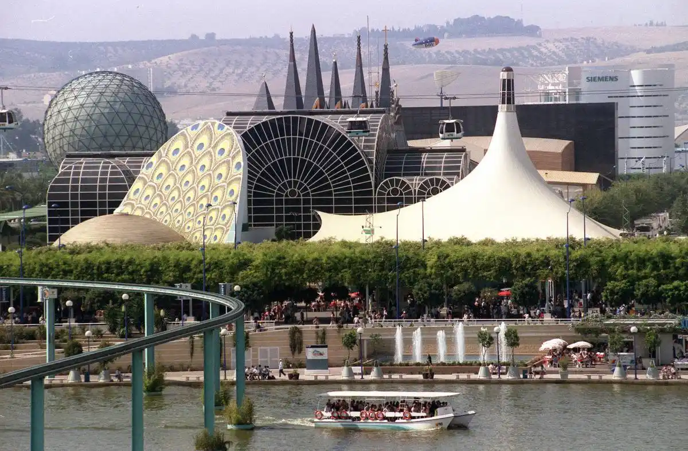

Over 2.9 million visitors in 2019, with an
average daily expenditure of approximately €78 per
tourist.Seville contributes 25% of Andalusia's total
GDP.Manufacturing (including aircraft parts and
agricultural machinery), shipbuilding, textiles, and
tourism.In 2023, Seville’s imports reached €6.54
billion, ranking 15th in Spain.Predominantly Spanish, with communities from the
U.S., Morocco, Argentina, and Colombia.In 2023, Seville exported goods worth €8.79
billion, ranking 15th among Spanish provinces.